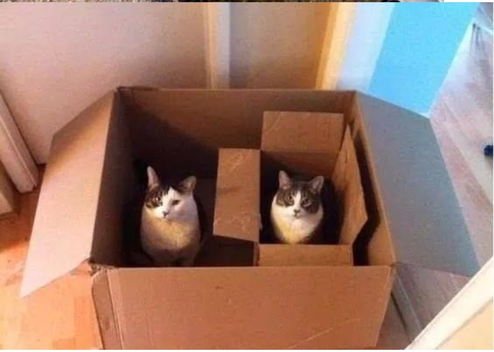
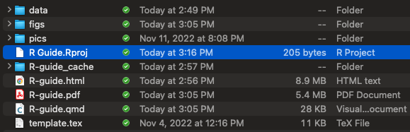
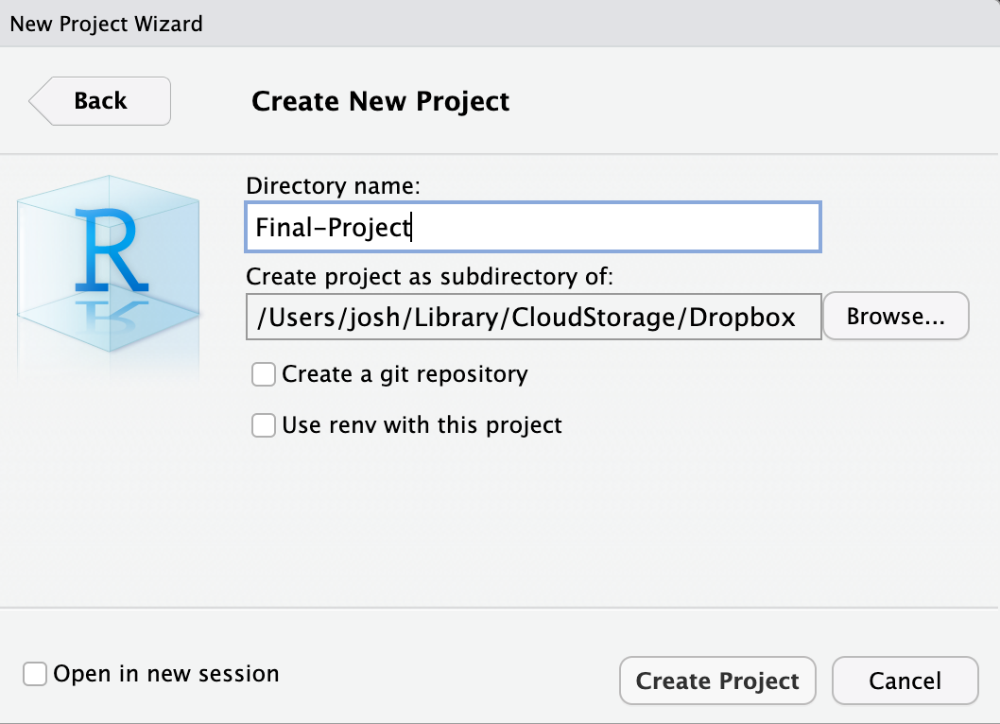
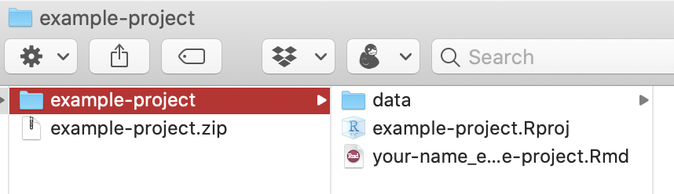
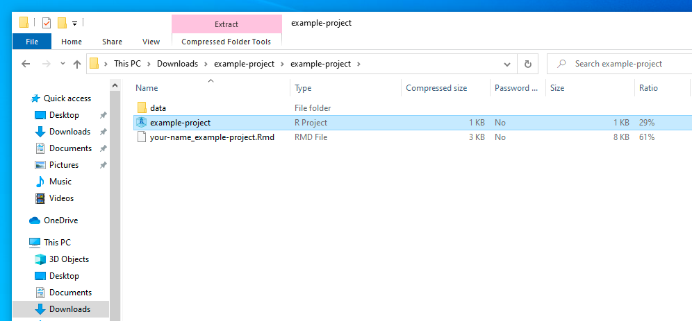
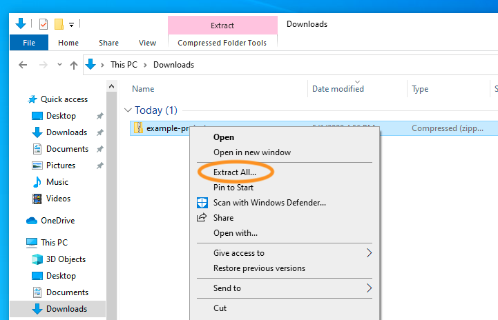
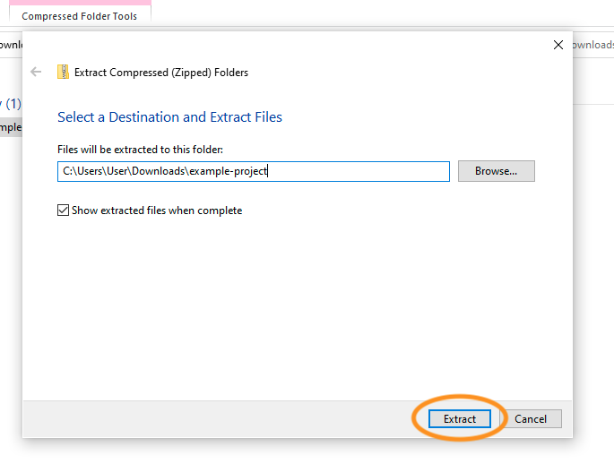
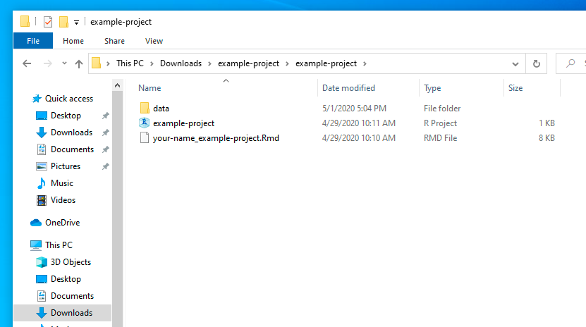

getwd() # this is the working directory for the r guide[1] "/Users/josh/Library/CloudStorage/Dropbox/R-Guide-GSU"One of the things that I have found is unintuitive for a lot of people when they are first learning R is how a computer thinks. A computer is very good at doing stuff quickly, but needs proper instructions. For things like an excel spreadsheet you can just open it and do things like =Average(C2) and it will just work. For Word you can just like drag and drop things without ever having to think about how the computer knows where an image is. R and other programming languages require some thought about things like this. So this chapter will introduce you to some of these things.
What is a working directory? Working directories are essentially the internal gps of the computer. You know(generally) where the stuff on your computer is you navigate by clicking on stuff and voila you found your stuff. Underneath the hood your computer is finding stuff by navigating along the working directory. On my computer to get to this R guide I click on my teaching folder, then I click on the Administrative Stuff folder, and then I click on the R-guide.qmd or R-guide.html file. This is what that process looks like for the computer
getwd() # this is the working directory for the r guide[1] "/Users/josh/Library/CloudStorage/Dropbox/R-Guide-GSU"Each / is essentially a click until you get to the final destination.
Heuristically you can think of it like this.

So to include the cat pictures in this guide, I stored it in a folder called figs so to tell R to navigate to the picture, I do something like this.
# how you navigate to folders on mac
 # this one way to include pics in a markdown doc
The / is you telling the computer that within the figs folder, there is a file I want you to include named cats-boxes.png. Windows does this slightly differently by doing something like
To manually set your working directory you do this
setwd("path/to/your/files") # mac and linux
setwd("path\to\your\files") # windowsHowever, working in R projects is best practice for various reasons. A projected-oriented workflow starts you off with a clean slate, so problem set 0 stuff is not still loaded. It also prevents you from constantly having to set the working directory.

When you start working on a problem set click on the .Rproj file. This will open up RStudio, and you should be ready to go!
To open a new project open R-Studio. In the top left you will see something that looks like a blank page. If you look to the right there is an R with a + and like a weirdish blue background. Click on that and you should see a menu that looks like.

For your final projects you are going to want to click new directory, then click new project. You should be looking at a menu that looks like this

In the directory name portion put in an informative name like Final-Project or ggplot lab. If you look at the bottom of the box you will notice that it will place the folder in my Dropbox folder. If you click on browse you can can change where the folder is put on your computer.
I strongly recommend you create a dedicated folder for your porjects instead of keeping everything on your desktop or downloads folder
To keep everything together in the same working directory I distribute the problem sets as Zip files. You will likely encounter these at some point in your professional life. If you want to send a folder via email to your boss or your direct reports that has lots of stuff like images than the chances are that you will have to send a Zip file because Outlook has a max file size of 33mb which is next to nothing. So it is worth spending a little time on how to unzip a file.
Fortunately for Mac users this is really easy. When you click download you will see something that looks like this

Double click on the downloaded .zip file. macOS will automatically create a new folder with the same name as the .zip file, and all the file’s contents will be inside. Double click on the RStudio Project file (.Rproj) to get started.
For Windows users this process is a bit more involved for reasons that are unclear to me. This can be at best an inconvenience at worst it can result in you doing all your work trying to save it and it disappearing into the abyss. One of the things that makes this incredibly confusing is that when you download the zip file it looks like a regular folder.

You can click around in it and even edit files within the zip file! Here’s what it looks like—the only clues that this folder is really a .zip file are that there’s a “Compressed Folder Tools” tab at the top, and there’s a “Ratio” column that shows how much each file is compressed. All your hard work will be gone because it is saved in some temp directory that will take ages to find and likely not work all that well.
You most likely won’t be able to open any data files or save anything, which will be frustrating.
Instead, you need to right click on the .zip file and select “Extract All…”:

Then choose where you want to unzip all the files and click on “Extract”

You should then finally have a real folder with all the contents of the zipped file. Open the R Project file and RStudio will point to the correct working directory and everything will work.
